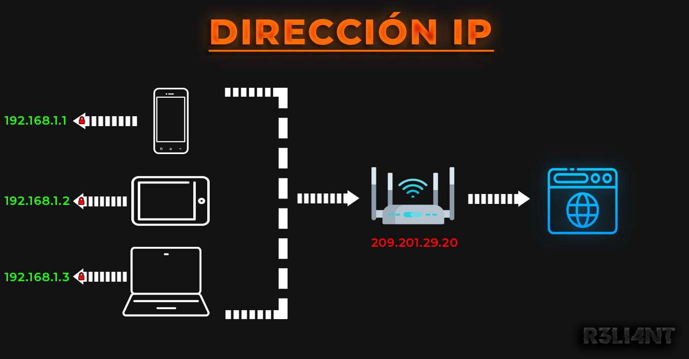

# ¿Qué es una dirección IP?
Una dirección IP es como un DNI, es un identificador único que se le asigna a un dispositivo en Internet o en una red local. IP significa "Protocolo de Internet", se encuentra dentro del modelo OSI y es definido como el conjunto de reglas que permite enrutar y direccionar paquetes de datos para que puedan viajar a través de redes y llegar a su destino correcto. Permiten el envío de información entre dispositivos en una red, mismas que contienen información de la ubicación y acceso de comunicación para que, así Internet puede diferenciar entre distintas computadoras, enrutadores y sitios web con la información dada de la IP. Una dirección IP es una cadena de números separadas por puntos y se expresan por un conjunto de cuatro números, por ejemplo 192.138.1.58. Cada número del conjunto puede variar entre 0 a 255. Por lo que, el rango completo de direcciones IP va desde 0.0.0.0 hasta 255.255.255.255.
¿Cómo se asignan las direcciones IP?
La Autoridad de números asignados de Internet (IANA) es una entidad dividida por Internet Corporation para números y nombres asignados (ICANN), que genera y asigna matemáticamente las direcciones IP globales, nombres de dominios DNS y otros recursos a los protocolos de Internet. ICANN es sin fines de lucro (establecido en los EE.UU en 1998) con el objetivo de mantener la seguridad de Internet y permitir que todos puedan utilizarla, lo único que se paga es una pequeña tarifa cada vez que se registra un nombre de dominio.
Dirección IP Pública y Privada - Diferencia
-
Las direcciones IP públicas son aquellas asignadas por el proveedor de servicios de Internet (ISP) mediante el router. El dispositivo personal tiene una IP privada que permanece oculta cuando se conecta a Internet por medio de una IP pública del router. Es única e irrepetible, puede ser dinámica: puesto que cambia cada vez que reiniciamos el router cada cierto período de tiempo, o puede ser fija (estática): la dirección IP siempre permanece igual, y que por algún motivo, es necesario contactar al ISP para solicitar una configuración manual de la IP, o por última, utilizar un VPN o Proxy. En resumen, una IP pública le ayuda a conectarse a Internet dentro de su red con el exterior de dicha red. Ejemplo de IP pública:
165.154.236.248 -
La direcciones IP privadas son direcciones fijas que se le asigna a cada dispositivo que se conecta a una red local ya sea privada o doméstica. Cada dispositivo tiene una IP privada única e irrepetible que le asigna el router, pero comparten la misma dirección IP pública al conectarse a Internet. Ejemplo de IP's privadas:
| DISPOSITIVO | IP PRIVADA | IP PÚBLICA |
|---|---|---|
| Ordenador | 192.168.1.2 | 117.251.103.186 |
| Smartphone | 192.168.1.3 | 117.251.103.186 |
| Tablet | 192.168.1.4 | 117.251.103.186 |
| Smart TV | 192.168.1.5 | 117.251.103.186 |
¿Se pueden rastrear las direcciones IP públicas?
Efectivamente sí, es posible que las direcciones IP públicas se puedan rastrear hasta su ISP, lo que podría revelar su ubicación geográfica pero no su posición exacta, generalmente se averigua el radio de la ciudad que se encuentra y que con otros datos, es posible que la policía con una orden judicial pueda acceder a ellos con la información que le brinde su servicio de ISP. Los proveedores de servicios no solo pueden rastrear su ubicación, sino también ver los registros DNS que usted visito, es decir, páginas web. Es sencillo saltarse este protocolo a través de un buen servicio VPN o cadenas de Proxys para ocultar su tráfico de red, pero de preferencia se recomienda utilizar el navgeador Tor para no dejar ningún rastro en línea.
Los sitios web también suelen utilizar el seguimiento de IP para analizar los patrones de comportamiento en línea, por lo que les resulta más fácil determinar si la misma persona visita un sitio de forma repetida, y con esto logran predecir sus preferencias al momento de visitar dicho sitio. A simple vista, con una dirección IP no se puede hacer gran cosa más que saber su ubicación o tirar la conexión mediante un D/DoS si el usuario no tiene un firewall decente, pero en algunos casos estas direcciones públicas tiene puertos abiertos donde corren servicios para realizar dichas tareas (Ej. puerto 80 HTTP para la comunicación del cliente y sitio), un hacker malintencionado podría escanear la IP en busca de servicios vulnerables y aprovecharse mediante un exploit ya escrito para dicha vulnerabilidad, ganando cierto tipo de acceso al dispositivo de la víctima. Mi recomendación es configurar un servidor proxy o VPN cada vez que se conecta a Internet, o tamibén hacerlo desde Tor, que por cierto, hay servicios VPN's que están obligados a revelar información personal de su tráfico de red en caso de que cometa un delito e involucre una acción policial, por ello mismo siempre se debe leer las políticas de privacidad antes de contratar un servicio.

# RASTREADOR DE IP | Python
Para este método, utilizaremos el módulo geocoder para rastrear la ubicación IP y que nos la muestre en el mapa. Instalamos el módulo con el siguiente comando:
$ pip3 install geocoder
pip3 install foliumCreamos un nuevo archivo y lo guardamos con la extensión .py. Importamos la librería en el código:
$ import geocoderTambién será necesario el módulo OS para interactuar con el sistema, ya que es preciso indicarle una ruta de salida al archivo .html.
$ import osY como último módulo, Folium permite manipular los marcadores del mapa para una mejor visualización (color, zoom, localización, etc).
$ import foliumEn el primer fragmento de código será crear dos variables con entrada input, la primera para especificar la dirección IP objetivo, y la segunda, el nombre de nuestro archivo .html (mapa). El método os.path.dirname() representa el nombre del directorio.

Posteriormente, le pasaremos la dirección IP objetivo a la función geocoder.ip que, junto con g.latlng, obtendrá la latitud y longitud de la misma para ser localizada.

Por último, con Folium le indicamos que tenga un zoom de inicio de mapa de 12, un radio de 50% de color rojo para ser distinguido, y la localización con la variable especificada anteriormente. Es importante guardar estos datos en un archivo .html e imprimir la ruta de salida.

Si todo sale correctamente, el script hará su trabajo.

Y efectivamente, la dirección IP que le especifiqué se ubica en Las Cruces, Estados Unidos. Con el mouse podemos hacerle un zoom más cercano y obtener más detalles al respecto, recuerda que no es la ubicación exacta ya que el ISP establece una localización aproximada.


Código completo:
$ import geocoder
import os
import folium
IP = input("Enter target IP -> ")
saveMap = input("Map name -> ")
savedFile = os.path.dirname(os.path.realpath(__file__))
g = geocoder.ip(f"{IP}")
address = g.latlng
map = folium.Map(location=address,zoom_start=12)
folium.CircleMarker(location=address,radius=50,popup="fersitiline",color="red").add_to(map)
map.save(f"{saveMap}.html")